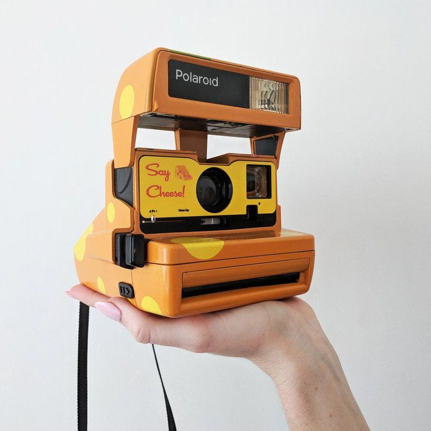
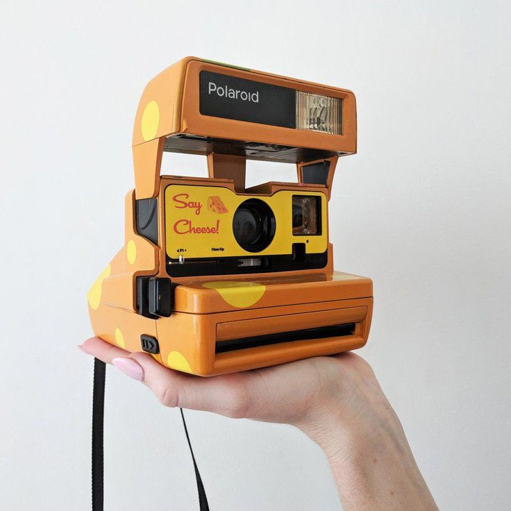

About Polaroid
Before the digital age, photography was a slow process. People had to wait days or even weeks to develop their photos. That changed in 1948 when Edwin Land introduced the world’s first instant camera — the Polaroid Land Model 95. This invention allowed people to capture moments and have printed photos in under a minute, revolutionizing photography forever. Polaroid continued to innovate, and in 1963, they launched instant color film, adding even more excitement to instant photography. In 1972, the legendary Polaroid SX-70 was released. It became an icon with its sleek design and ability to produce photos that developed instantly without peeling film layers apart. As digital cameras and smartphones rose in popularity, Polaroid’s instant cameras faced a decline. In 2001, the company filed for bankruptcy, and production of instant film slowed down. However, in 2008, The Impossible Project revived Polaroid by producing new instant film and keeping the spirit of instant photography alive. Today, Polaroid cameras are loved not just for their vintage feel, but for the fun, creative, and personal experience they offer. They capture memories in a way that digital photos can't, giving users a physical photo they can hold, share, and cherish instantly..
 
